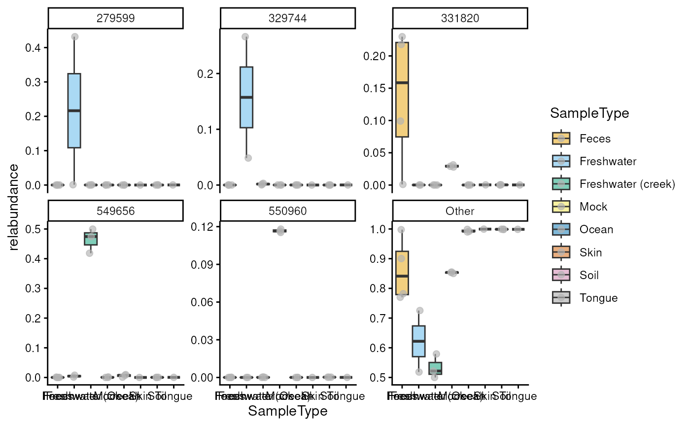

R/AllGenerics.R, R/subsetBy.R
subsetBy.RdsubsetBy keeps the features (rows) and samples (columns) that meet
conditions written as R expressions. The conditions are evaluated on the
object that is passed to the function, so when several subsetBy
calls are piped, each condition is computed from the data that remains
after the previous steps.
subsetBy(
x,
rows = NULL,
cols = NULL,
collapse = FALSE,
collapse.name = "Other",
...
)
# S4 method for class 'SummarizedExperiment'
subsetBy(
x,
rows = NULL,
cols = NULL,
collapse = FALSE,
collapse.name = "Other",
...
)a SummarizedExperiment object.
An expression that returns a logical vector with one
value per feature, or NULL to keep all features. (Default:
NULL)
An expression that returns a logical vector with one
value per sample, or NULL to keep all samples. (Default:
NULL)
Logical scalar. Should the features that do not
meet the rows condition be merged into one feature instead of being
removed? (Default: FALSE)
Character scalar. Name of the merged feature
when collapse = TRUE. (Default: "Other")
additional arguments passed to
agglomerateByVariable when
collapse = TRUE, e.g. update.tree.
x with the features and samples that meet the conditions.
The expressions can refer to the assays by their names (e.g.
counts), which are available as matrices. rows can also
refer to the columns of rowData(x), and cols to the columns of
colData(x). If an assay and a rowData or colData
column have the same name, the assay is used. Other variables, such as
thresholds, are taken from the environment where subsetBy is called.
rows is evaluated before cols, and cols is evaluated
on the data that remains after subsetting the rows. NA values in
the result of a condition are treated as FALSE.
With collapse = TRUE, the features that do not meet the rows
condition are merged into a single feature named collapse.name,
placed after the kept features. Its values are the sums of the merged
features, so the sample totals stay the same. This is useful, for example,
for plotting the most abundant features together with the rest. Summing is
meaningful for counts and relative abundances but not for transformed
values such as clr. The merging is done with
agglomerateByVariable, which drops the
rowTree unless update.tree = TRUE. collapse affects
only features; samples that do not meet the cols condition are
always removed.
data(GlobalPatterns)
tse <- GlobalPatterns
# Keep features with more than 10 counts in total
tse_sub <- subsetBy(tse, rows = rowSums(counts) > 10)
# Filter in steps. Each step is computed from the data left by the
# previous step, so library sizes are calculated after the rare features
# have been removed.
tse_sub <- tse |>
subsetBy(rows = rowSums(counts) > 10) |>
subsetBy(rows = rowMeans(counts > 0) > 0.25) |>
subsetBy(cols = colSums(counts) > 100000)
# Keep the features with a mean relative abundance above 1% and merge the
# rest into one feature called "Other"
tse <- transformAssay(tse, method = "relabundance")
tse_sub <- subsetBy(
tse, rows = rowMeans(relabundance) > 0.01, collapse = TRUE)
tail(rownames(tse_sub))
#> [1] "550960" "158660" "331820" "189047" "98605" "Other"
# Combine different subsettings in a pipe: first remove samples with
# fewer than 500,000 reads, then keep the 5 most abundant features and
# merge the rest into "Other". The result can be plotted, e.g., with
# miaViz::plotBoxplot() or miaViz::plotAbundance().
tse_top <- GlobalPatterns |>
subsetBy(cols = colSums(counts) >= 500000) |>
transformAssay(method = "relabundance") |>
subsetBy(rows = rank(-rowMeans(relabundance)) <= 5, collapse = TRUE)
dim(tse_top)
#> [1] 6 20
rownames(tse_top)
#> [1] "329744" "549656" "279599" "550960" "331820" "Other"
# Plot the top features and "Other" by sample type
if( requireNamespace("miaViz", quietly = TRUE) ){
miaViz::plotBoxplot(
tse_top, assay.type = "relabundance",
x = "SampleType", fill.by = "SampleType",
facet.by = "rownames", scales = "free_y")
}

# Conditions can also use rowData and colData variables
tse_sub <- subsetBy(
tse, rows = Kingdom == "Bacteria", cols = SampleType == "Feces")
# This includes quality control metrics stored with addQC(). Note that
# stored metrics are not updated when the data is subsetted, so in stepwise
# filtering, compute the metric in the condition or call addQC() again.
tse <- addQC(tse, by = "rows")
tse <- addQC(tse, by = "cols")
tse_sub <- subsetBy(tse, rows = sd > 0 & detected >= 3, cols = total > 1e6)
# Keep the top 10 features, i.e., the features with the highest mean
# abundance
tse_top <- subsetBy(tse, rows = rank(-mean) <= 10)
# Keep features that are abundant (over 1%) in at least one sample, or
# that have a median count above zero
tse_sub <- subsetBy(tse, rows = rowMaxs(relabundance) > 0.01)
tse_sub <- subsetBy(tse, rows = rowMedians(counts) > 0)
# Remove constant features, i.e., features with zero variance
tse_sub <- subsetBy(tse, rows = rowVars(counts) > 0)
# Standard deviation is on the scale of the data, e.g., clr
tse <- transformAssay(tse, method = "clr", pseudocount = 1)
tse_sub <- subsetBy(tse, rows = rowSds(clr) > 1)
# Keep features and samples with at most 10% missing values
tse_sub <- subsetBy(
tse,
rows = rowMeans(is.na(counts)) <= 0.1,
cols = colMeans(is.na(counts)) <= 0.1)
# Keep rare features, i.e., features present in at most 50% of samples
tse_sub <- subsetBy(tse, rows = rowMeans(counts > 0) <= 0.5)
# Use a detection limit: keep features whose relative abundance is above
# 0.1% in more than 20% of samples
tse_sub <- subsetBy(tse, rows = rowMeans(relabundance > 0.001) > 0.2)
# Calculate prevalence in each sample type. Keep features that are
# prevalent in at least one sample type, so that group-specific features
# are not removed, e.g., before differential abundance analysis.
prev <- sapply(splitOn(tse, group = "SampleType"), getPrevalence)
tse_sub <- subsetBy(tse, rows = rowSums(prev > 0.5) > 0)
# Keep features that are rare in all sample types
tse_sub <- subsetBy(tse, rows = rowSums(prev > 0.5) == 0)